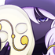
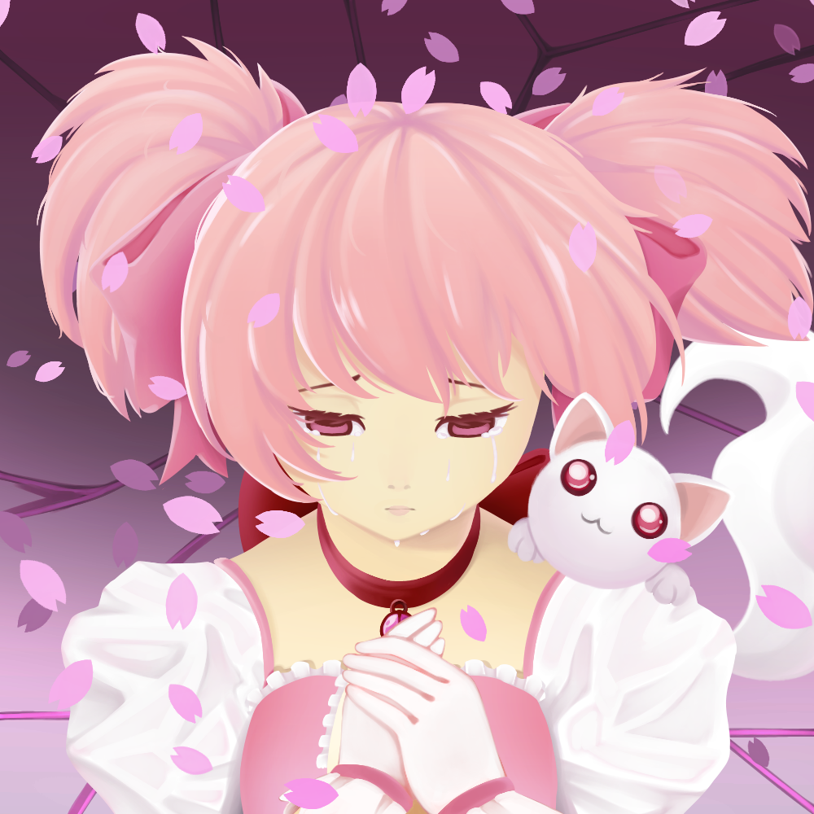
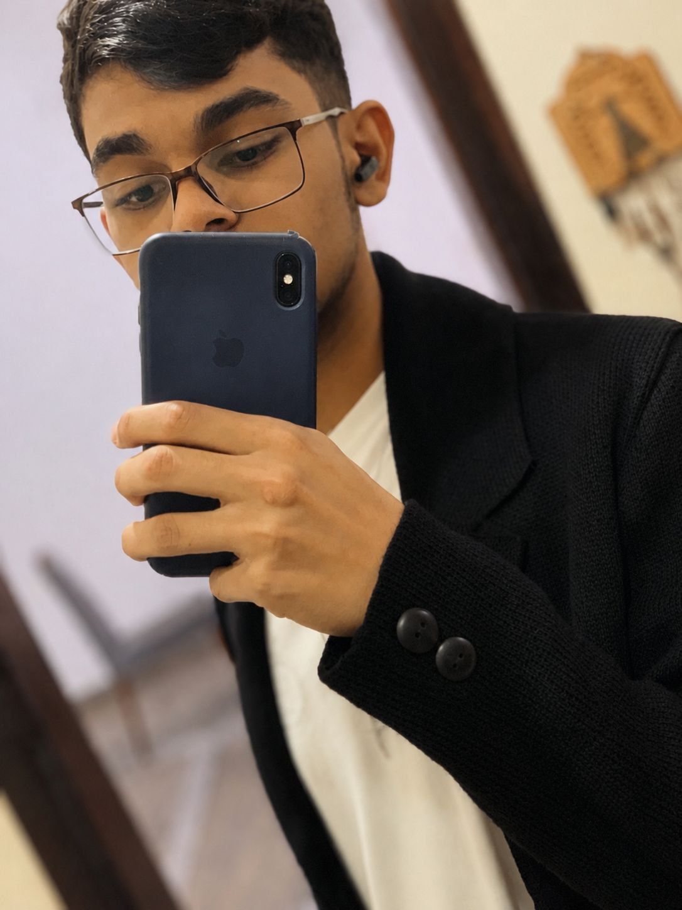

Jessica
Ilustradora Digital · Criadora de Personagens
Jessica é uma artista digital especializada em ilustrações de personagens com cores vivas e traços expressivos. Seu trabalho mistura influências do estilo anime com técnicas de pintura digital moderna, criando composições únicas cheias de personalidade.
Obra Principal
A obra que define a identidade artística da Jessica

Madoka
Arte Digital EspecialEsta é a obra mais especial da galeria — uma ilustração de Madoka que representa a evolução do estilo artístico da Jessica. Com traços delicados, paleta de cores vibrante e atenção minuciosa aos detalhes, essa arte captura a essência do trabalho da artista.
- Técnica
- Pintura Digital com camadas
- Personagem
- Madoka — arte original fan-art
- Resolução
- Alta resolução — 4K
- Status
- Obra finalizada
- Criado por
- Jessica · 2026
Etapas da criação
Vitrine
Todas as Obras
Sobre o Desenvolvedor

João Vitor Alves Araujo
Desenvolvedor responsável pela criação desta galeria digital como projeto da disciplina de Desenvolvimento Web. A galeria foi criada para exibir e divulgar as obras da artista Jessica, com foco em ilustrações digitais, personagens e arte criativa.
O projeto utiliza JavaScript puro para montagem dinâmica do conteúdo, Bootstrap 5 para responsividade e estrutura de dados em JSON.